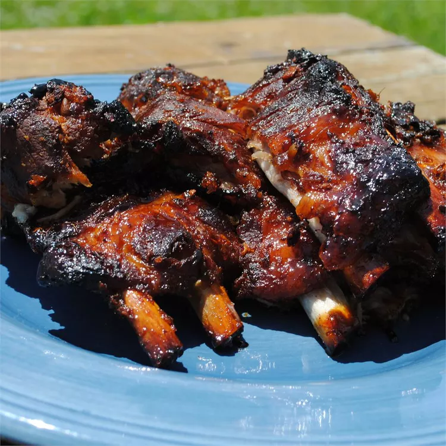

Home

This Filipino ribs recipe glazes spareribs with the sweet, tangy taste of the Philippines. One of the honey coating ingredients, star anise, is native to China; it is a star-shaped, dark brown pod that contains a pea-sized seed in each of its eight segments. Star anise is available at all Asian markets as well as many general grocery stores.
Ingredients:
- 3 pounds pork spareribs
- 1 medium onions, cut into wedges
- 3 tablespoons soy sauce, divided
- 3 whole star anise pods
- ⅛ teaspoon ground black pepper
- ¼ cup water
- ½ tablespoon vegetable oil
- ½ medium onion, finely chopped
- ¼ cup honey
- 1 tablespoon brown sugar
- ½ tablespoon grated fresh ginger
- ½ tablespoon Worcestershire sauce
- ½ tablespoon lemon juice
Directions:
- Place ribs, 2 onions cut into wedges, 4 tablespoons soy sauce, star anise pods, and black pepper in a large stock pot . Add water and bring to a boil. Reduce heat to medium low, cover, and simmer until ribs are tender when pierced, about 1 ¼ hours, stirring occasionally.
- Meanwhile, heat oil in a medium skillet over medium heat. Add 1 onion chopped; cook and stir until onion is soft. Stir in honey, brown sugar, remaining 2 tablespoons soy sauce, ginger, Worcestershire sauce, and lemon juice; cook and stir until well blended. Remove from heat.
- Preheat the oven to 400 degrees F (200 degrees C).
- Remove ribs from stock pot using tongs; arrange in a single layer in an 11x16-inch baking pan. Brush evenly with honey glaze.
- Bake in the preheated oven, basting often with pan drippings, until ribs are well glazed, about 30 minutes.